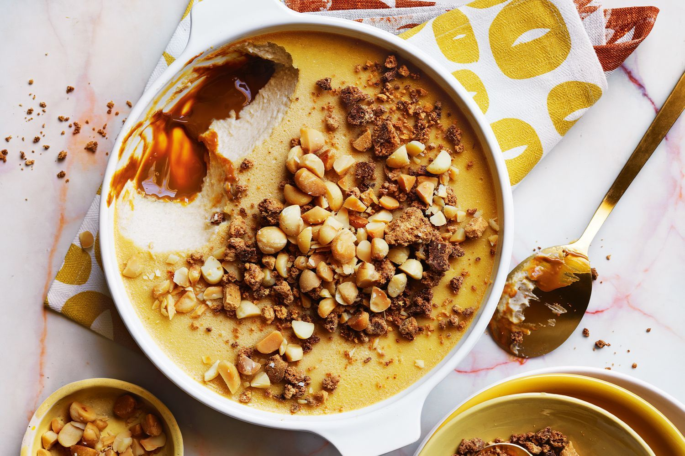

Make the dressing: In a small bowl, whisk together the cashew butter, miso paste, lime juice, sesame oil, and ginger. Whisk in enough water to create a drizzable consistency. Set aside.
In a dry cast-iron skillet over medium heat, char the peppers whole, rotating until the edges have a little char, about 2 minutes per side. Remove. When cool to the touch, slice in half lengthwise, remove the stem, ribbing, and seeds and slice horizontally into thin strips.
In a large bowl, combine the cabbage, peppers, scallions, cilantro, basil, chiles, and ¾ of the dressing. Toss until combined. Add the remaining dressing, if desired, and season to taste with a few pinches of sea salt. Serve topped with the toasted nuts, seeds, and sliced peaches.
Desserts

Banoffee cream pudding with white choc crumble
Prep time
Cook time
20 mins
40 mins
Ingredients
300g ripe bananas
1/2 cup (125ml) maple syrup
8 eggs (at room temperature), lightly beaten
2 tsp vanilla bean paste
1/2 cup (110g) caster sugar
900ml pure (thin) cream
250g dulce de leche (from specialist food shops)
180g white chocolate, finely chopped
100g roasted macadamias, roughly chopped
Instructions
Preheat oven to 140°C. Place bananas and maple syrup in a blender and whiz until a smooth purée forms. Strain through a sieve into a large bowl, add the egg, vanilla and sugar and gently whisk to combine. Place cream in a large saucepan over medium heat and bring to just below boiling point. Gradually pour hot cream over the egg mixture, whisking continuously but gently until combined.
Spread dulce de leche over the base of a 1.8-litre baking dish and pour egg mixture on top. Place dish in a large, deep pan and add enough boiling water to come halfway up the sides of the dish. Bake for 1 hour 40 minutes or until edges are set with a gentle wobble in the centre (the centre may seem quite wobbly but will continue to set as the pudding cools). Carefully remove from the water bath and stand on a wire rack until cooled completely. Refrigerate for 3 hours or until chilled and set.
Meanwhile, increase oven temperature to 180°C. Grease a large baking tray and line it with baking paper.
To make the chocolate crumble, scatter chocolate on prepared tray and bake, stirring halfway, for 10-12 minutes until light golden. Stand for 5 minutes to cool, then crumble the chocolate into small pieces and combine with macadamia. Scatter over pudding just before serving.
Milk products
Silky ice-cream
Prep time
Cook time
5 mins
20 mins
Ingredients
2 cups heavy cream
1 cup whole milk
⅔ cup sugar
⅛ teaspoon fine sea salt
6 large egg yolks
Instructions
In a small pot, simmer heavy cream, milk, sugar and salt until sugar completely dissolves, about 5 minutes. Remove pot from heat. In a separate bowl, whisk yolks. Whisking constantly, slowly whisk about a third of the hot cream into the yolks, then whisk the yolk mixture back into the pot with the cream. Return pot to medium-low heat and gently cook until mixture is thick enough to coat the back of a spoon (about 170 degrees on an instant-read thermometer).
Strain through a fine-mesh sieve into a bowl. Cool mixture to room temperature. Cover and chill at least 4 hours or overnight. Churn in an ice cream machine according to manufacturers’ instructions. Serve directly from the machine for soft serve, or store in freezer until needed.
Heat the oven to 200C/180C fan/gas 6. Bring a medium pan of water to the boil. Add the potatoes and cook for 8 mins. Drain and leave to steam-dry in a colander for a few minutes. Toss the potatoes with ½ of the oil and plenty of seasoning in a baking tray. Put in the oven for 20 mins, tossing halfway through the cooking time.
Meanwhile, heat the remaining oil in a frying pan over a medium heat. Add the leek and fry for 5 mins, or until beginning to soften. Stir through the garlic for 1 min, then add the cream, capers and 75ml hot water, then bring to the boil. Stir through the chives.
Heat the grill to high. Pour the creamy leek mixture over the potatoes, then sit the salmon fillets on top. Grill for 7-8 mins, or until just cooked through. Serve topped with extra chives and capers and a salad on the side, if you like.